Listas en papel y hojas sueltas
Nadie sabe con certeza cuántos votos son firmes ni dónde están.
Ecosistema digital de campaña
Ocho aplicaciones conectadas para dirigir líderes, votantes y el día de elección desde un solo lugar.
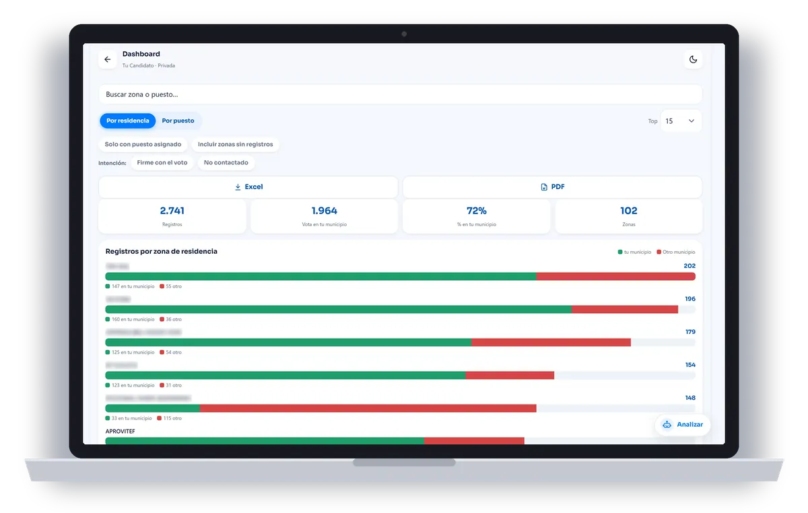
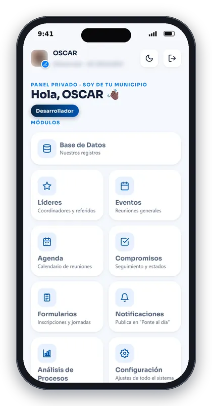
El reto
Nadie sabe con certeza cuántos votos son firmes ni dónde están.
La red crece, pero no se mide quién trabaja y quién solo suma nombres.
Sin datos en vivo no se sabe a quién falta movilizar.
El ecosistema convierte cada contacto en un dato que se mide, se sigue y se defiende.
El ecosistema
Todo lo que pasa en la calle llega a la dirección de campaña al instante.
Base de datos, líderes, tablero y análisis.
Servicios, gestiones y zona de líderes.
Jornadas y eventos con formulario propio.
Escáner del día de elección y conteo en vivo.
Quién llegó a cada evento, leído con QR.
Catálogo, beneficios y reseñas.
Cada llamada queda registrada.
Identificación verificable de cada persona.
En video
Panel de dirección, app ciudadana, inscripciones, votación, asistencias, comercios, call center y avisos al celular, grabados en uso real con datos de ejemplo.
Verlo en YouTubeControl de líderes
Crecimiento, acumulado y tipificación, mes a mes y en vivo.
Cada líder con su escala: excelente, bueno, regular o bajo.
Lo que refiere y se compromete, con informe en PDF o Excel.
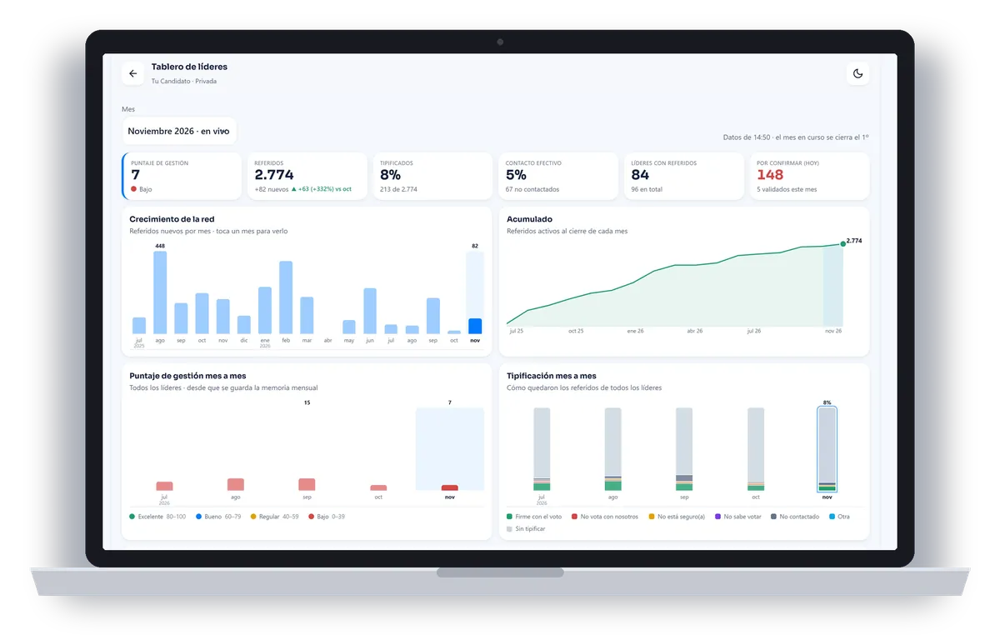
Medición del trabajo
Cada persona marcada: firme, por confirmar o sin contactar.
La curva de cada líder; el mes en curso, en vivo.
Responde la pregunta clave: cuántos votos son seguros.
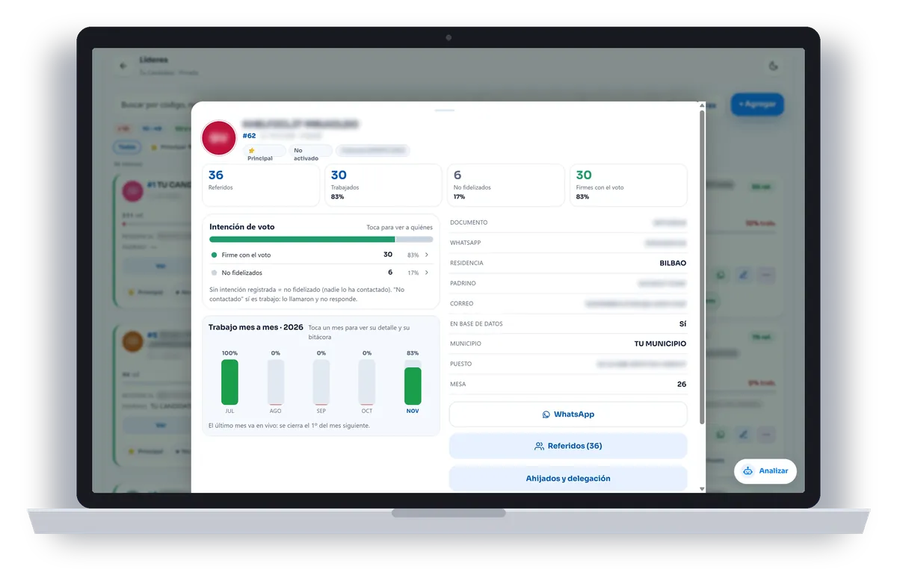
Base de datos
Por líder, intención, zona, estado y actividad: servicios, compromisos, eventos o formularios.
Dónde está la fuerza y dónde hay que reforzar.
Lo que agrega un líder aparece sin recargar. Excel y PDF en un toque.
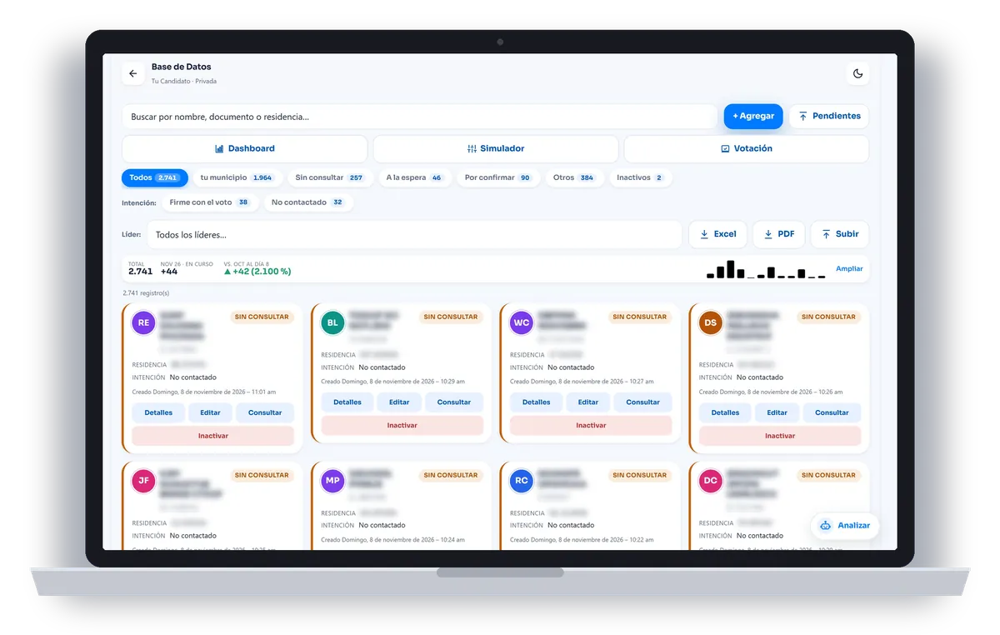
Validación de registros
Quién no aparece en el censo o no puede votar, y por qué.
Cada líder recibe sus registros por confirmar y los corrige.
Carga masiva con motivo y salida controlada de quien ya no cuenta.
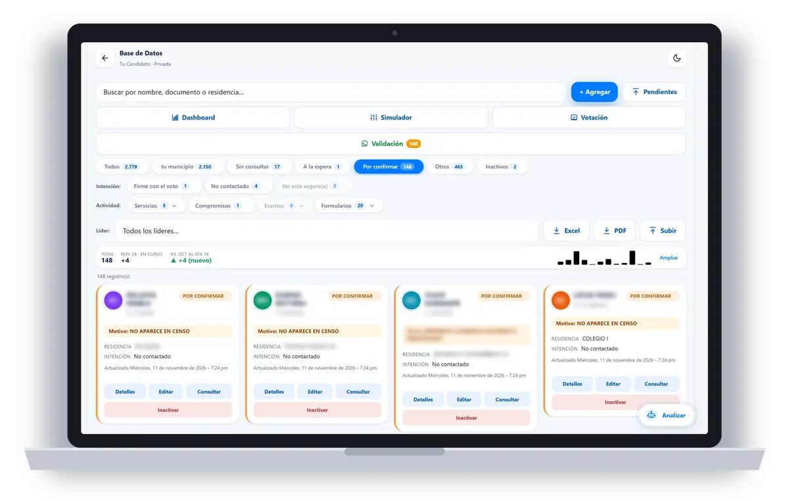
Trazabilidad
Servicios, compromisos, eventos, inscripciones y voto, en un solo lugar.
Un PDF con todo lo que se le ha brindado a la persona.
Ve sus gestiones y las califica de 1 a 5 estrellas.
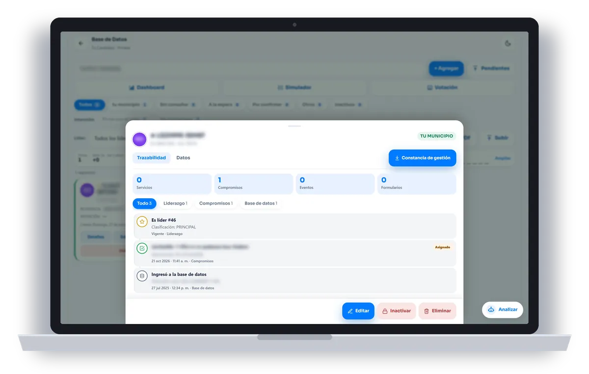
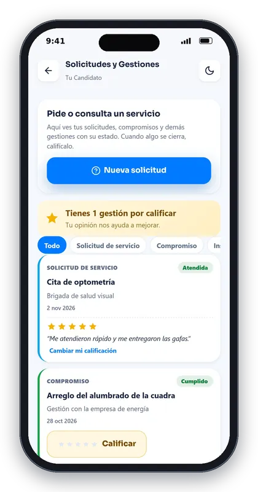
Inscripciones
Preguntas con condiciones, o los que ya tenía en Google Forms.
Se cierra solo al llenarse; un documento, una inscripción.
Llamar, WhatsApp, confirmar y sumarlo a la base con su líder. Comprobante con QR.
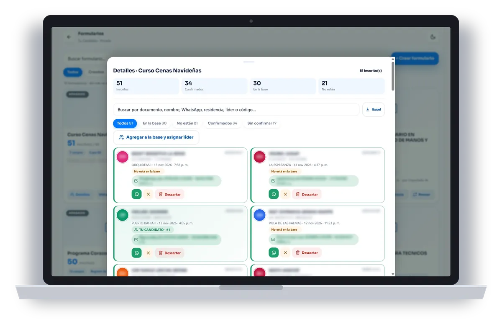
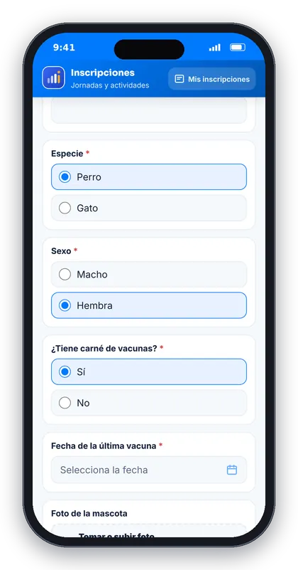
Día de elección
Uno a uno o en ráfaga, con el QR de cada persona.
Por puesto, mesa y líder, en el tablero de la dirección.
Guarda cada lectura y la sube sola al volver la red, sin duplicar.
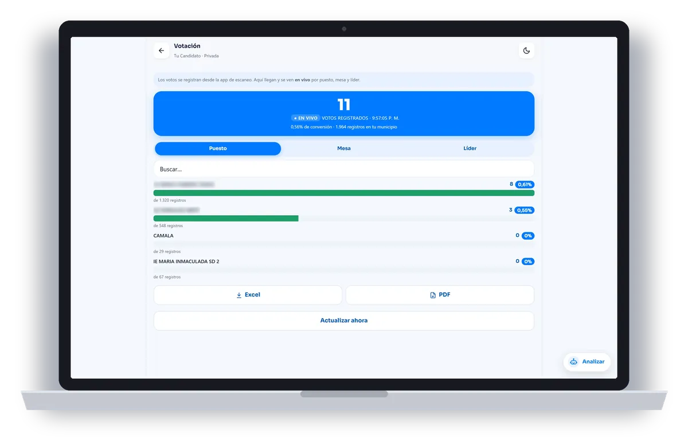
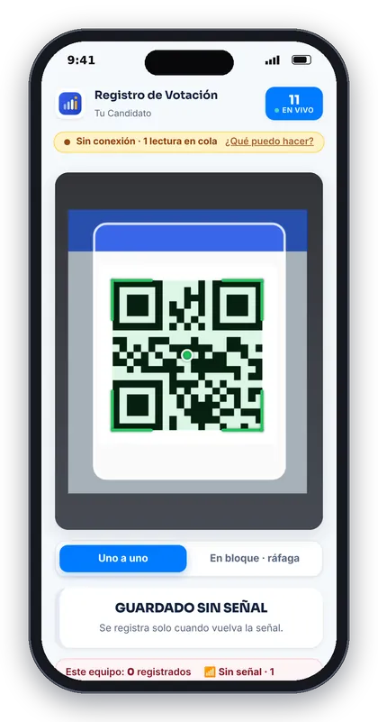
Sin conexión
Cada vista abierta con señal queda disponible sin internet.
Reuniones, compromisos, estados y bitácoras se guardan y suben con un toque, sin duplicar.
Cada vista dice qué se puede hacer sin señal y qué espera la red.
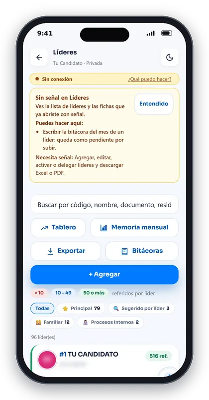
Velocidad
Seguridad
líneas de programación propia trabajando detrás de cada pantalla.
Sin sesión válida no sale ni un dato.
Roles y permisos por vista; cada líder, solo su red.
Nada público por enlace y autorización según la Ley 1581.
Cada registro se guarda una sola vez, aunque falle la señal.
Puesta en marcha
Nombre, logo, colores, zonas y lo que ve el ciudadano.
Su base de datos y su equipo, listos para trabajar.
Soporte continuo hasta el día de elección.
O genere ahora la propuesta para su municipio: le llega en PDF al correo.
Generador de propuesta
Confirme los datos. La propuesta se arma con ellos.